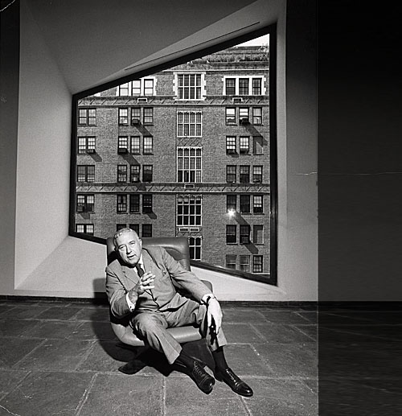
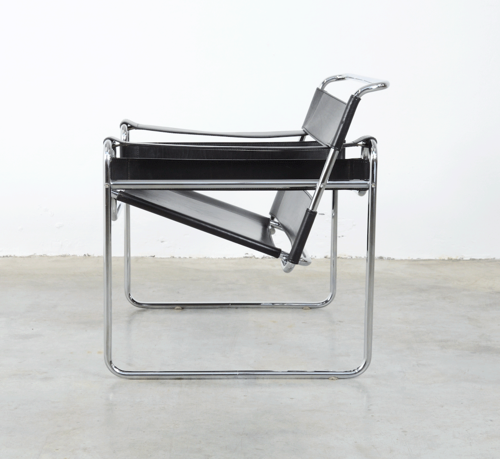

WASSILY ARMCHAIR - 1926
The Wassily Chair, also known as the Model B3 chair, was designed by Marcel Breuer in 1926 while he was the head of the cabinet-making workshop at the Bauhaus (Dessau, Germany). In 1925, Breuer bought his first bicycle. He was so impressed by its lightness and strength that he had decided to make furniture from tubular steel. The Wassily Chair’s design remains progressive even in comparison to the design world’s latest furniture. Its build is complex in appearance but simple in construction, a contrast which has earned its place in museums throughout the world, and in thousands of modern-minded homes. Revolutions in design are most often driven by advancements in material and technology. The famous Wassily Chair by Marcel Breuer is precisely one of these, the first ever chair to feature a bent-steel frame. While it was first created in 1926, it marked the beginning of a new era in modern furniture with a design that maintains a progressive look even today.